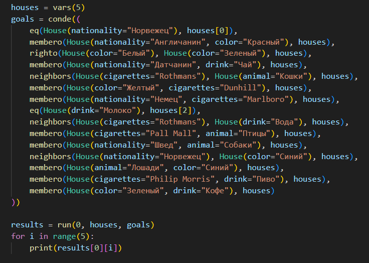
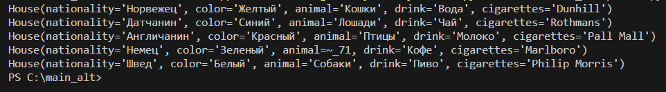

Назад
GitHub
Загадка Эйнштейна
Условия задачи:
Известно, что 5 разных человек проживают в 5 разных домах разного цвета, курят 5 разных марок сигарет, выращивают 5 разных видов животных, пьют 5 разных видов напитков. Дома находятся друг за другом.
Дано некоторое количество условий и исходя из них необходимо определить каждую категорию всех домов.
В одной из наших задач следующие условия:
- Норвежец живет в первом доме
- Англичанин живет в красном доме
- Зеленый дом находится слева от белого
- Датчанин пьет чай
- Тот, кто курит Rothmans, живет рядом с тем, кто выращивает кошек
- Тот, кто живет в желтом доме, курит Dunhill
- Немец курит Marlboro
- Тот, кто живет в центре, пьет молоко
- Сосед того, кто курит Rothmans, пьет воду
- Тот, кто курит Pall Mall, выращивает птиц
- Швед выращивает собак
- Норвежец живет рядом с синим домом
- Тот, кто выращиает лошадей живет в синем доме
- Тот, кто курит Philip Morris, пьет пиво
- В зеленом доме пьют кофе
Для данной задачи необходимо несколько отношений, а именно:
- eq(a, b):
a и b имеют такое отношение, если они равны. Данное отношение реализовано в библиотеке kanren.
Позволят задать такое условие: Норвежец живет в первом доме.
- membero(a, b):
a и b имеют такое отношение, если a является частью списка b. Данное отношение также реализовано в библиотеке kanren.
Позволяет задать такое условие: Англичанин живет в красном доме.
- righto(a, b, c):
a, b и c имеют такое отношение, если a и b являются частью списка b, и a находится справа от b. С помощью данного отношения можно задать такое условие: Зеленый дом находится слева от белого.
- neighbours(a, b, c):
a, b и c имеют такое отношение, если a и b являются частью списка и либо a находится справа от b, либо b находится справа от a.
Позволяется задать такое условие: Сосед того, кто курит Rothmans, пьет воду
Поиск решения
Для поиска решения конкретной задачи необходимо задать все условия с помощью отношений, описанных ранее и запустить код.

Если условия задачи составлены корректно, то решение будет всего одно. Ниже приведен результат работы программы с заданными условиями.

Генератор задач
Генерация новой задачи происходит в 4 этапа:
- Случайная генерация списка домов
- Добавление случайного правила, соответствующего данному списку
- Проверка значимости правила
Например если список состоит из правил:
В 1 доме пьют воду, в 1 доме выращивают птиц, то правило в доме, где пьют воду, выращивают птиц незначимое и не несет никакой информации
- Повторение пункта 2 и 3, пока на основе выделенных правил нельзя будет найти однозначный ответ
Генератор задач, а также реализация решения выложены на гитхаб, ссылка находится в шапке данной страницы